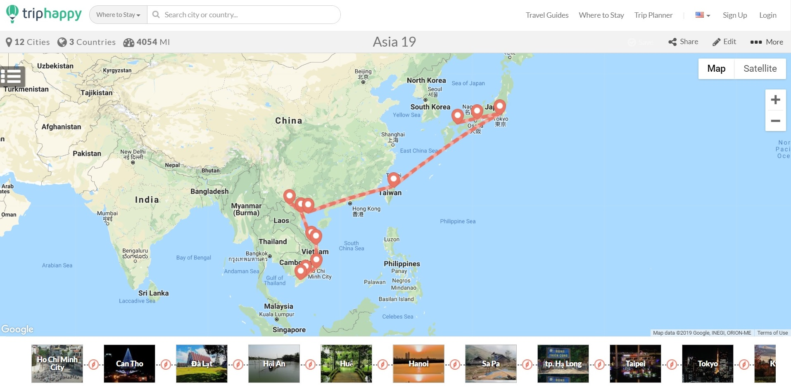

My Itinenary

- To begin my trip I flew into Ho Chi Minh city in the south of Vietnan to meet my friend travelling down from China. We then cruised the Mekong Delta, before visiting the mountaineous town of Dalat. After this I made my way up north to the central towns of Hoi An and Hue, and finished my stay in Hanoi with a few side trips to the scenic Halong Bay and rugged Sapa by the border of China.
- Saying goodbye to Vietnam and to my friend who had to return home, I flew to Taiwan to spend a few days in the capital Taipei. There was so much to see in this metropolis that I based my entire trip in Taipei there, with activities ranging from the Beitou Hot Springs to taking in the view at Taepei 101, the 11th tallest building in the world.
- After a fantastic stay in Taiwan, I embarked on the last leg of my trip, the land of the Rising Sun. I flew from Taipei to Toyko and spent 5 days there. Rest assured you can spend 50 days in Toyko and not take it all in, there is so much to see and do. During this my brother flew over from Ireland to meet me. We moved from the modern to the traditional by taking a bullet train from Toyko to Kyoto, my favourite city of the entire trip. Finally I took another train down to Hiroshima, with the Peace Memorial and associated musuem serving as a powerful reminder of Japan's sad history. I reluctantly concluded my trip with a train back to Tokyo to take a plane all the way back to Dublin.